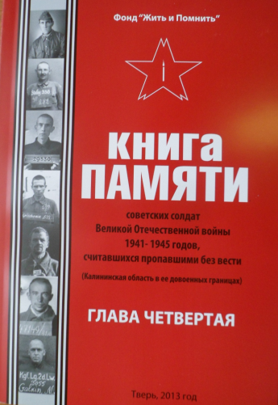
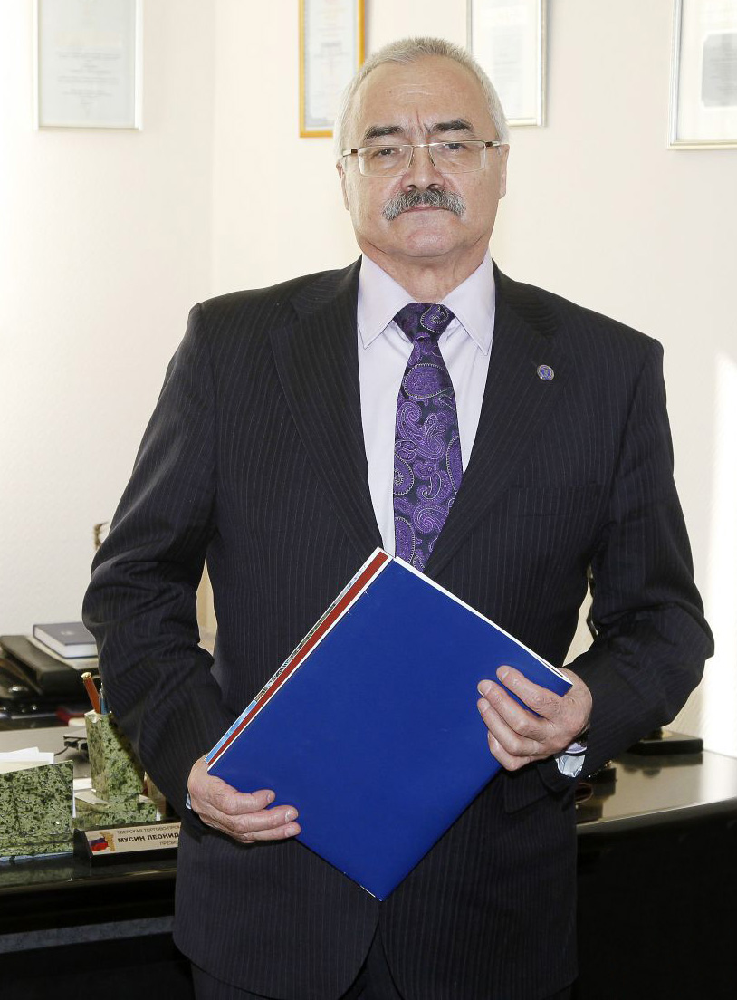
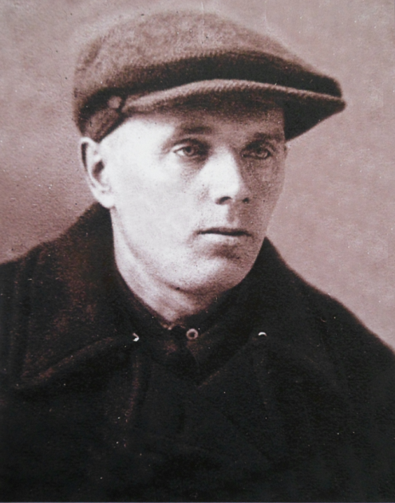

МАЙ 2013 года
Книга Памяти
СОЛДАТ ПРОПАВШИХ ИМЕНА И СУДЬБЫ
Фондом «Жить и Помнить» издана очередная, четвертая глава Книги Памяти советских солдат Великой Отечественной войны 1941 - 1945 годов, считавшихся пропавшими без вести (Калининская область в её довоенных границах). В ней более четырехсот пятидесяти имен наших земляков, не вернувшихся с фронтов Великой Отечественной войны.
В абсолютном большинстве они увековечены в Книге Памяти Тверской области как пропавшие без вести и лишь некоторые – как погибшие в плену без указания даты, места гибели и места захоронения. Теперь фронтовая судьба каждого из них описана достаточно подробно, с указанием места рождения, даты и места призыва (мобилизации), гражданской специальности, последнего места службы, где и когда попал в плен, в каких лагерях или рабочих командах находился, когда и по каким причинам погиб, где похоронен. У многих есть сведения о близких родственниках.
Имена семидесяти одного воина (более 15%) в четвертой главе Книги Памяти увековечены впервые, т.е. их нет ни в одном из одиннадцати томов официальной Книги Памяти Тверской области, изданной в 1994 – 1996 и 2002 гг. Это дает, на наш взгляд, достаточные основания говорить о том, что на фронтах Великой Отечественной войны погибли, умерли от ран и болезней, пропали без вести не двести восемьдесят семь тысяч наших земляков, как считается сейчас, а значительно больше.
Особенность четвертой главы - наличие в ней нескольких десятков имен погибших воинов, которые увековечены в Книге Памяти Тверской области с указанием сейчас не существующих мест первичного захоронения. На самом деле все они были после войны перезахоронены в мемориальные воинские захоронения.
Выход в свет этой главы Книги Памяти стал возможным благодаря благотворительного взноса на издание Семёнова Александра Николаевича, как он сам о себе говорит, коренного жителя Твери. От себя добавим: краеведа, историка, коллекционера, издателя, патриота Отечества и своей малой родины, просто хорошего человека. Мы также выражаем благодарность за финансовую поддержку нашего проекта исполняющей обязанности директора Центра патриотического воспитания Тверской области Назаровой Наталии Валентиновне.
Как и раньше более половины всего издания мы разослали по всем районам области, в администрации муниципальных образований, музеи, советы ветеранов, школы, молодежные общественные организации, поисковые отряды. Надеемся, что по уже сложившейся традиции на местах будет организован розыск родственников воинов, чьи имена вошли в эту главу Книги Памяти с тем, чтобы донести до них информацию о погибших. Каждому родственнику, обратившемуся к нам, мы готовы безвозмездно предоставить один экземпляр книги.
Все четыре изданные главы Книги Памяти можно скачать с нашего сайта http://www.zhitipomnit.ru/ .
В настоящее время Фонд готовит к изданию пятую главу. Появится ли она в этом году? Это будет зависеть только от наших финансовых возможностей. При условии софинансирования издания Правительством области, мы сделаем все возможное, чтобы книга увидела свет к 72-й годовщине освобождения города Калинина от немецко-фашистских захватчиков.
Не так давно президент Фонда «Жить и Помнить» Л.М. Мусин был приглашен на совещание, которое проводил руководитель департамента территориальной и информационной политики Правительства Тверской области Гагарин А.В. После этого совещания появилась маленькая надежда на то, что к 70-летию Победы Книга Памяти советских солдат Великой Отечественной войны 1941 - 1945 годов, считавшихся пропавшими без вести будет издана полностью. |

Уважаемые ветераны и члены их семей, родственники погибших защитников Отечества!
От имени всех сотрудников фонда «Жить и Помнить» сердечно поздравляю вас с Днем великой Победы!
 В этот день мы вспоминаем павших на полях сражений, вспоминаем тех, кто сгинул без вести в фашистском плену. До сих пор судьба многих из них неизвестна, их останки не обрели места последнего упокоения. Своим гражданским, человеческим долгом, требованием совести и справедливости мы считаем розыск и увековечение памяти пропавших без вести. Для того в Тверской области и действует фонд «Жить и Помнить», и мы намерены продолжать эту работу.
Растет число обращений к нам граждан и организаций. Расширяется география поиска. Мы активно сотрудничаем с поисковиками, отвечаем на запросы, обмениваемся информацией с представителями многих регионов страны. Очень важно, что движение по увековечению памяти погибших становится поистине всероссийским.
Важнейшим итогом нашей работы стало издание первых четырех глав «Книги памяти советских солдат Великой Отечественной войны – уроженцев Калининской области, считавшихся пропавшими без вести». В будущем году исполнится 70 лет со дня освобождения Калининской области от немецко-фашистских захватчиков. Фондом начата подготовка к этой знаменательной дате и, уверены, издание «Книги памяти» будет продолжено.
По традиции, накануне замечательных майских дней повторю слова, ставшие девизом нашей работы. Пусть ни один из погибших на полях сражений, в плену, в блокаде, на трудовом посту не останется безымянным! Пусть все, чью жизнь избороздила война, будут сегодня окружены вниманием и заботой!
Мира, здоровья, успешного созидательного труда – желаем мы в этот замечательный день всем нашим друзьям и коллегам!
Вечная память павшим!
Леонид Мусин, президент фонда «Жить и Помнить» |
ХРАНИТЕЛЬ ПАМЯТИ
В конце марта в наш Фонд пришла Дина Михайловна Макарова, которая сейчас живет в Твери, на ул. Можайского, что в Южном. Пришла, чтобы узнать побольше о своих родственниках, не вернувшихся с войны. А таких у неё оказалось не один и не два… . Дина Михайловна принесла с собой документы, письма и фотографии, которые за долгие послевоенные годы ей удалось разыскать. Все они были аккуратно разложены по именам.
Старший брат отца МАКАРОВ Дмитрий Андреевич, 1896 года рождения, работал на Тверском вагонзаводе. Человеком был уважаемым, все обращались к нему только по имени и отчеству. Для своих младших братьев и сестер – как отец, которого к тому времени уже не было в живых. В армию его призвали только в марте 1942 г. А в 1941-м у него от «шальной» пули погибла жена, пошла в деревню Степаньково за продуктами и не вернулась.
Сохранилось несколько писем с фронта, в одном из них есть и такие слова: «Теперь у нас только одно желание: поскорее покончить с гадом Гитлером, а потом начать залечивать раны». Последнее письмо пришло в сентябре 1942 г.
Как удалось выяснить, воевал Дмитрий Андреевич в составе 348 стрелковой дивизии (полевая почтовая станция № 263) 39 Армии Калининского фронта. В сентябре месяце 1942 г. части и подразделения дивизии вели бои в районе Ржева. В одном из таких боев Дмитрий Андреевич и пропал без вести. Повоевал не долго, всего полгода.
Его сын красноармеец МАКАРОВ Евгений Дмитриевич, 1924 года рождения, на фронт ушел добровольцем, в том же 1942 году. Стрелок 1255 стрелкового полка 379 стрелковой дивизии. Погиб 14 августа 1942 г. у дер. Горбово Ржевского р-на. Перезахоронен красноармеец МАКАРОВ Е.Д. в братскую могилу в дер. Полунино Ржевского р-на.
Младший брат отца МАКАРОВ Александр Андреевич родился в г. Калинине в 1912 г. До войны за драку был осужден, строил Беломоро-Балтийский канал. В армию призван Вагжановским РВК (название РВК – так в документе) г. Калинина в 1941 г. Младший сержант, наводчик, 274 стрелковая дивизия. Погиб в бою 24 февраля 1943 г. у дер. Мосягино Ржевского р-на. После войны перезахоронен в братскую могилу в дер. Полунино Ржевского р-на. В Книге памяти Тверской области ошибочно увековечен как перезахороненный в братскую могилу в дер. Гнилево.
Муж тети Дины Михайловны СЕРЯКОВ Федор Степанович родился в 1896 г. в дер. Прудище Калининского р-на Калининской области. Перед войной вместе с семьей жил в г. Калинине на ул. Лесная, д. 10. В армию был призван Пролетарским РВК г. Калинина в 1941 г. Красноармеец, стрелок 916 стрелкового полка 247 стрелковой дивизии, на тот момент 31 Армия Западного фронта. Погиб 1 сентября 1942 г. у дер. Табаково Зубцовского р-на Калининской области. Перезахоронен в братскую могилу в дер. Паршино Зубцовского р-на.
Окончание на 2 странице.
|
|
|
|
|